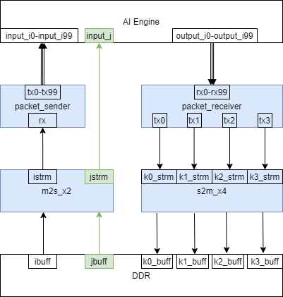

Versal™ ACAP AI Engine TutorialsSee Vitis™ Development Environment on xilinx.com See Vitis-AI™ Development Environment on xilinx.com |
Building the Design¶
Estimated time: 11 minutes
make all
or follow steps 1-3 below:
Step 1: Download the Vitis Utility Library¶
git clone https://github.com/Xilinx/Vitis_Libraries.git
Note: Vitis Libraries require you to have the package python3-venv installed on your system.
This will download the folder Vitis_Libraries/utils. You will be using its L2 Data-Mover generator tool.
Step 2: Generate m2s_x2.cpp and s2m_x4.cpp Datamover kernels¶
make -f ./ksrc.mk GENKERNEL=Vitis_Libraries/utils/L2/scripts/generate_kernels SPEC=./kernel/spec.json TOOLDIR=./_krnlgen
Here you use the L2 Data-Mover generator tool (Vitis_Libraries/utils/L2/scripts/generate_kernels). This tool uses the kernel/spec.json specification to write kernel/m2s_x2.cpp and kernel/s2m_x4.cpp HLS kernel source files.
Step 3: Compile HLS PL Kernels¶
Following is an example of how the m2s_x2 kernel is compiled.
v++ -c \
-t hw \
--platform xilinx_vck190_base_202110_1 \
--save-temps --optimize 2 \
--hls.jobs 8 -I./xf_utils_hw/L1/include \
-I./xf_utils_hw/L1/include/hw \
-I./kernel \
-k m2s_x2 \
--hls.clock 300000000:m2s_x2 \
--temp_dir ./build/_x_temp.hw.xilinx_vck190_base_202110_1 \
--report_dir ./build/reports/_x.hw_emu.xilinx_vck190_base_202110_1 \
-o './build/_x_temp.hw_emu.xilinx_vck190_base_202110_1/m2s_x2.xo' \
./kernel/m2s_x2.cpp
The same compilation options are used to compile the s2m_x4, packet_sender, and packet_receiver kernels.
HLS PL Kernels¶
After coming up with 400 tile AI Engine design, the next step is the come up with the way to move data from DDR send it to the AI Engine. We do this by using the the Vitis™ core development kit, to create kernel code in C++ meant to be accelerated on the FPGA. The kernel code is compiled by the Vitis Compiler (v++ -c) into kernel objects (XO). The following is a table describing each HLS PL kernel.
| Kernel Name | Description | Fmax |
|---|---|---|
m2s_x2 |
Dual-channel data-mover that moves data from DDR to AXI4-Stream. | 411 MHz |
packet_sender |
Packet switching kernel that packetizes AXI4-Stream data by generating a header packet and appropriately asserting TLAST |
580 MHz |
packet_receiver |
Packet switching kernel that evaluates packet headers from incoming streams and reroutes data to one of 4 AXI4-Streams | 499.5 MHz |
s2m_x4 |
Quad-channel data-mover that moves data from AXI4-Stream to DDR. | 411 MHz |
Using Vivado timing closure techniques, you can increase the FMax if needed. To showcase the example, integrate using the 300 MHz clock. There is also a 400 MHz timing-closed design in the beamforming tutorial.

m2s_x2¶
The m2s_x2 is generated from the kernel/spec.json specification. Review this file. Notice the m2s_x2 kernel implementation is set to LoadDdrToStream, meaning this kernel is used to move data from DDR (AXI-MM) to AXI-Stream. It is specified to have two channels. The first channel moves data from a DDR buffer called ibuff to an AXI-stream called istrm. This channel moves the i data out of DDR to AXI-Stream. The second channel moves j data from DDR buffer jbuff to an AXI-Stream jstrm and streams the data directly into the AI Engine’s input_j port.
packet_sender¶
After m2s_x2 kernel loads i data onto an AXI-Stream, the istrm is the input to the packet_sender kernel. The packet_sender kernel takes raw i data and packetizes it for the AI Engine. Review the kernel/packet_sender.cpp definition. The packet_sender does the following:
generates a header AXI-Stream packet
reads the
rxstreamwrites 224 AXI-Stream data packets to one of the 100
txstreamsasserts
TLASTappropriately on the last data packet
It repeats these actions so all 100 tx streams have a packet header and 224 data packets written to it. This is 1 iteration of data the AI Engine is expecting. The 100 tx streams are connected to the 100 input_i ports on the AI Engine.
packet_receiver¶
After the AI Engine’s 100 N-Body Subsystems crunch the N-Body equations on the input_i and input_j data, it outputs four data packets on each of the 100 output_i ports. Each output data packet can have a header of 0, 1, 2, or 3, indicating that it is coming from nbody_kernel[0], nbody_kernel[1], nbody_kernel[2], or nbody_kernel[3] in each of the nbody_subsystems. The 100 output_i ports are connected to the 100 rx streams on the packet_receiver kernel. The packet_receiver kernel receives four packets from each of the 100 rx streams, and depending on the packet header, writes the data to tx0, tx1, tx2, or tx3 streams.
s2m_x4¶
The s2m_x4 kernel is generated from the kernel/spec.json specification. Review this file again. Notice that the s2m_x4 kernel has an implementation StoreStreamToMaster which moves data from AXI-Streams to DDR. The s2m_x4 kernel has 4 channels: k0,k1,k2, and k3. Each stream writes the data coming from the tx0-tx3 streams to a DDR buffer.
References¶
Next Steps¶
After compiling the PL datamover kernels, you are ready to link the entire hardware design together in the next module, Module 04 - Full System Design.
Licensed under the Apache License, Version 2.0 (the “License”); you may not use this file except in compliance with the License. You may obtain a copy of the License at
http://www.apache.org/licenses/LICENSE-2.0
Unless required by applicable law or agreed to in writing, software distributed under the License is distributed on an “AS IS” BASIS, WITHOUT WARRANTIES OR CONDITIONS OF ANY KIND, either express or implied. See the License for the specific language governing permissions and limitations under the License.
Copyright© 2021 Xilinx
XD068